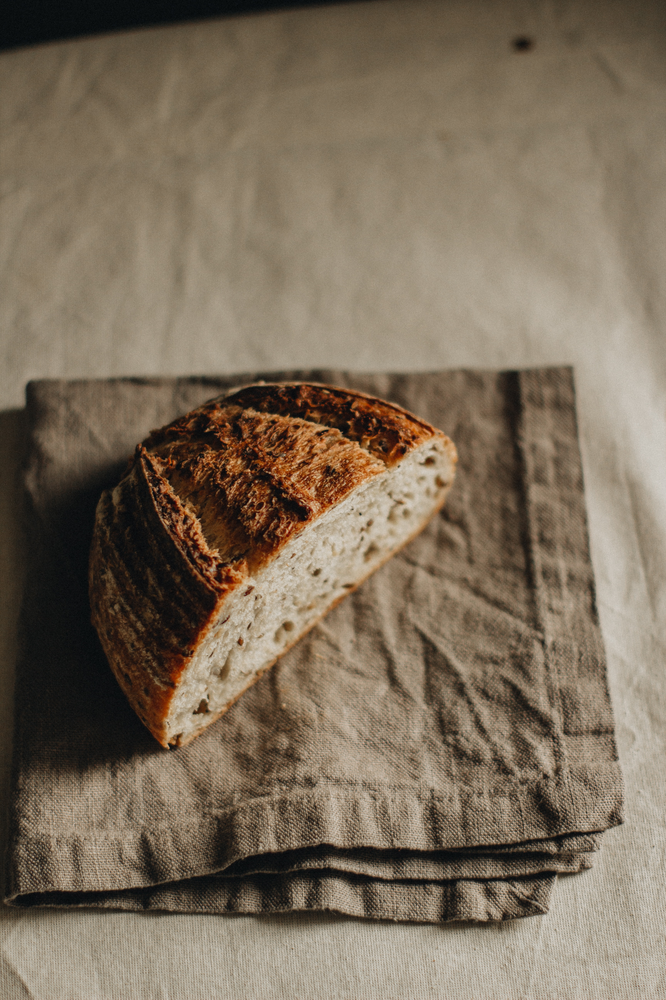

Welcome
Mobile Panini is the culmination of the dream of Antonio and Carmen Dolcini, who came to America looking to serve people the authentic recipes learned from their Sicilian family.
Antonio began work as a child in his grandmother's deli where he learned the age-old secrets of Sicilian cooking. He refined his technique at the Culinary Institute of Milan. His younger brother, Carmen, with no less of a love for cooking and good food, also worked in the deli and became well-acquainted with the open-air fresh food markets of his home town. Carmen too, is a proud graduate of the Culinary Institute of Milan.
Now you can enjoy what they have learned and mastered, right outside your door; but with no compromises in freshness or delicacy of preparation. We've partnered with Curbside Thai to bring you the finest cuisine on four wheels - from the East and the West!
Phone: (704) 555-2188
E-mail: mobilepanini@example.com